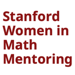
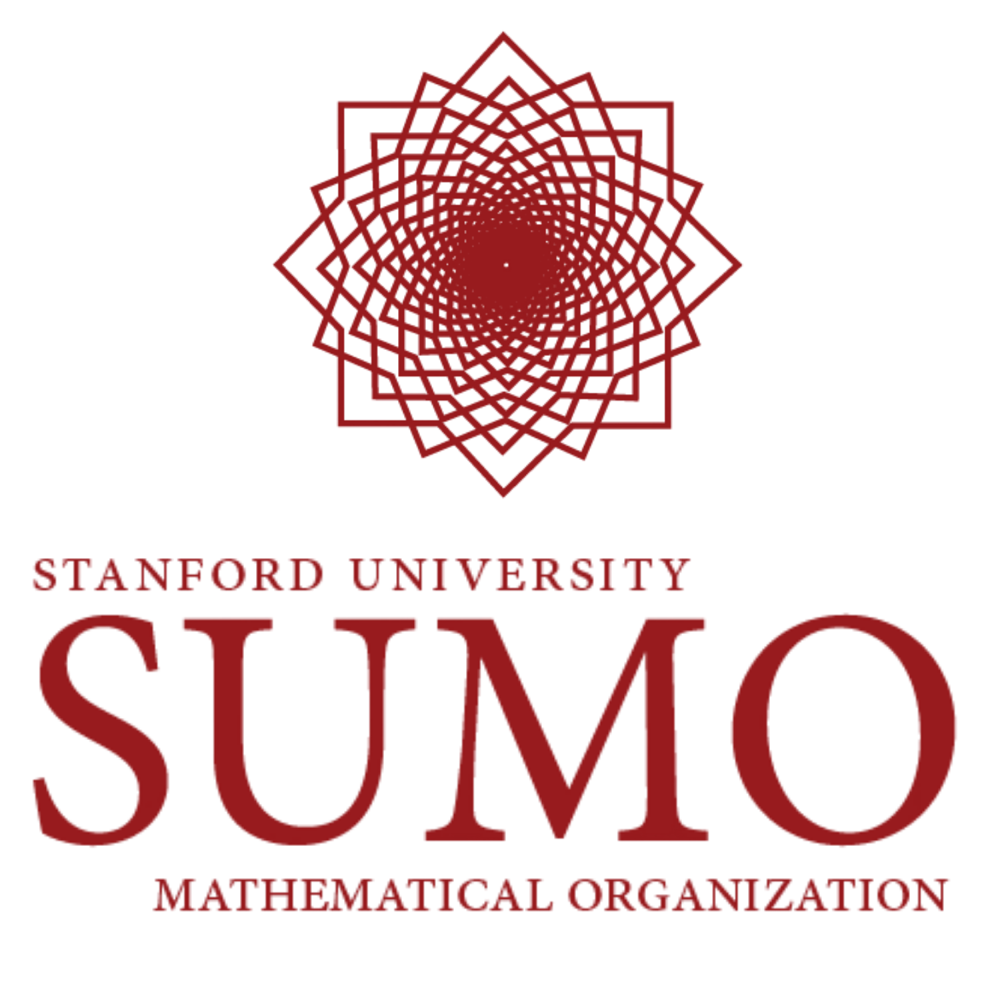

A closer look at the teaching, tutoring, and mentoring roles woven through my time at Stanford.
Teaching
Five roles spanning Stanford’s Mathematics and Computer Science departments, from one-on-one tutoring to teaching assistantships.
Stanford Mathematics Department
Sharpened students’ command of linear algebra, spectral theory, and dynamical systems.
Provided advanced instruction in theoretical and applied mathematics through Stanford’s Mathematics Department. Guided students through rigorous explorations of vector space theory, multivariable analysis, and differential systems, with specialized focus on spectral and matrix theory, eigenvalue and singular value decomposition (SVD), dimensionality reduction, proof construction, and the analysis of linear operators and dynamical systems.
Stanford Mathematics Department
Evaluated advanced coursework in Fourier analysis and differential equations for three faculty.
Graded mathematical work involving Fourier analysis, ordinary differential equations, differential calculus, and integral calculus. Worked under Professors Lernik Asserian (Spr ’25), Christine Taylor (Win ’26), and Mark Lucianovic (Win ’25 & Spr ’26). Developed strong academic and working relationships with professors across the math department.
Stanford’s Center for Teaching & Learning
Strengthened students’ analytical reasoning and computational problem-solving.
Selected to provide individualized instruction in mathematics and computer science, guiding Stanford students through advanced quantitative coursework and developing their analytical reasoning, computational thinking, and independent problem-solving.
Stanford Computer Science Department
Taught adversarial search and automated reasoning for autonomous game-playing agents.
Assisted in teaching a graduate-level AI course on the design of autonomous agents capable of strategic reasoning in novel environments. Guided students in applying methods from automated reasoning, symbolic knowledge representation, adversarial and heuristic search, resource-bounded planning, and algorithmic game theory to develop general-purpose intelligence systems that learn and execute strategies from formal game descriptions.
Stanford Computer Science Department
Instructed Python and front-end development as one of the youngest TAs the department selected.
Served as an instructor for Stanford CS105, teaching Python and front-end development while mentoring students through technical projects and problem-solving. One of very few third-year undergraduate students selected by the Stanford Computer Science Department to serve as a teaching assistant.
Mentorship
Across three mentorship roles, I helped students strengthen their mathematical understanding, navigate research, and pursue opportunities in computer science, while offering encouragement and support to build their confidence.

Graduate Mentor
Selected to mentor Stanford undergraduates in advanced mathematics, quantitative research, graduate study, and career development through individual advising, panels, and community events, as part of Stanford Women in Mathematics Mentoring (SWIMM).

Mathematics Mentor
Provided technical mentorship on navigating advanced curricula, identifying research specializations, and pursuing opportunities across quantitative fields, with the Stanford Undergraduate Mathematics Organization (SUMO).
Outreach Mentor
Worked to expand access to computer science education by providing volunteer programming instruction and technical mentorship to historically underrepresented communities, with Stanford Women in Computer Science (WiCS).